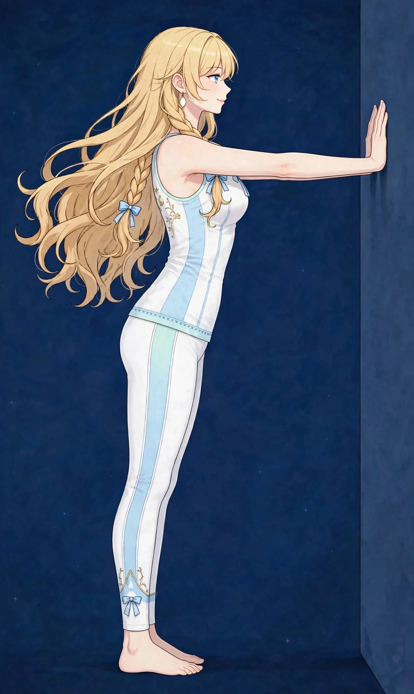

梅田で巻き肩ケア｜肩が内側に入る・胸が縮こまる姿勢に美容整体姿勢・見た目
パソコンやスマートフォンの姿勢が続くと、肩は少しずつ内側へ巻き込まれていきます。巻き肩になると、胸まわりが縮こまり、呼吸が浅く感じたり、肩の前側に張りを感じたりすることがあります。
巻き肩はどんな状態か
巻き肩は、両肩が本来の位置より前へ・内側へ巻き込まれた姿勢の状態を表す言葉です。立ったときに手のひらが太ももではなく後ろを向きやすい、肩の前側に張りを感じる、といったサインで気づく方が多くいます。パソコンやスマートフォンの姿勢が長く続く生活で、少しずつ固定されていくクセです。
巻き肩になると胸まわりが縮こまり、呼吸が浅く感じたり、肩こりや背中の張りとセットで表れたりします。肩だけの問題ではなく、胸の前側の縮こまりと背中側の引っ張られがセットになった姿勢の問題として捉えることが大切です。
こんなサインはありませんか？ — 巻き肩のチェックリスト
- 肩が内側に入っていると言われる
- 胸が縮こまって呼吸が浅い気がする
- 肩の前側に張りを感じる
- スマホ・パソコン姿勢が長い
- 腕を上げると肩の前側につっぱり感がある
- 仰向けで寝ると肩が床から浮く感じがする
- バッグを肩にかけるとずり落ちやすい
- 深呼吸で胸が広がりにくい気がする
当てはまる項目が多いほど、負担がたまりやすい生活が続いている可能性があります。次の「要因」と見比べて、どこに負担が集まっているか確かめてみてください。
巻き肩につながりやすい要因
- 画面作業の姿勢：キーボードやマウスへ手を伸ばす姿勢、スマホをのぞき込む姿勢は、どちらも肩を前へ引き出す姿勢です。一日の大半を占める姿勢ほど、クセとして固定されやすくなります。
- 胸の筋肉の縮こまり：胸の前側の筋肉（大胸筋や小胸筋）が縮こまったまま硬くなると、肩を前へ引っ張り続けます。巻き肩の中心的な背景のひとつです。
- 背中側の支えの弱さ：肩甲骨を寄せて支える背中側の筋肉が働く機会が減ると、前に引っ張る力とのバランスが崩れ、肩の位置が前へ流れやすくなります。
- 腕の使い方の偏り：重い荷物を前で抱える、片側の肩にバッグをかけ続けるといった偏りは、肩の位置の左右差や巻き込みを強めることがあります。
- 呼吸の浅さ：胸が縮こまると呼吸は浅くなり、浅い呼吸は首や肩まわりの筋肉を余分に使うため、肩の力みが抜けにくくなります。姿勢と呼吸は連動しています。
- 寝姿勢：横向きで肩を丸めて眠る姿勢が固定されると、朝の時点で肩が内側に入った状態から一日が始まります。
図1｜巻き肩と関係する胸まわりの筋肉（前面）

東洋医学から見た考え方
東洋医学では、体の前面と背面の巡りのバランスを重視します。前面が縮こまって巡りが滞ると、上半身全体の重さにつながりやすいと捉え、胸や腕の付け根まで含めた広い範囲をケアします。
見立てでは、胸の前面を巡る肺経や心包経、腕の外側から肩へ向かう経絡など、前面と背面の巡りのバランスを重視します。前面が縮こまって巡りが滞ると、上半身全体の重さにつながりやすいと捉え、胸や腕の付け根まで含めた広い範囲をケアします。関連する経絡の考え方は、経絡ページでも紹介しています。
代表的なツボ
巻き肩のケアでよく挙げられる、胸まわりのツボを紹介します。鎖骨の下はデリケートな場所のため、強い力ではなく指の腹でやさしく押す程度を目安にしてください。
図2｜胸まわりのツボの位置（前面）
おすすめ施術
美容整体
胸まわりや肩の前側、二の腕の付け根をほぐしながら、肩の位置を本来の場所へ戻していく意識で施術します。オイルマッサージとの組み合わせも可能です。
進め方は、まず胸まわりや肩の前側、二の腕の付け根を丁寧にほぐして前面の縮こまりを緩め、それから背中側とのバランスを見ながら肩の位置を確認していく流れです。肩を無理に後ろへ引くのではなく、前面が緩むことで自然に収まる位置を探します。
オイルマッサージとの組み合わせも可能です。姿勢のクセは一回で固定が解けるものではないため、施術で緩める時間と、日常のセルフケアを組み合わせる考え方もお伝えしています。
自宅でできるセルフケア
巻き肩のセルフケアは「胸を開く」ことが中心です。痛みやしびれが出る場合は無理をせず中止し、続く場合は医療機関にご相談ください。
- 1．壁で胸を開くストレッチ壁に手のひらをつけ、腕を斜め上に伸ばして体を少し前に進め、胸の前側を20秒伸ばします。肩の前側が伸びる感覚が目安です。左右同様に行います。
- 2．タオルを使った肩回し両手でタオルの両端を持ち、頭の上を通して前後にゆっくり動かします。肩甲骨と肩関節を大きく動かす動きで、胸の開きも一緒に意識できます。
- 3．スマホの高さを上げるスマホを目線の高さまで持ち上げる工夫だけでも、肩の巻き込み方は変わります。肘置きやクッションで腕を支えると、長時間でも姿勢を保ちやすくなります。
- 4．深呼吸で胸を広げる両手を肋骨の側面に当て、横へ広がるように息を吸う呼吸を3回。胸が縮こまった日ほど、呼吸から姿勢をリセットする意識が助けになります。
図3｜セルフケア「壁で胸を開くストレッチ」の手順

場面別の注意
デスクワーク中
キーボードの位置が遠いほど肩は前へ出ます。椅子を近づけ、肘が体の横に収まる位置を目安にしてください。1時間に一度、胸を開くストレッチを挟む習慣がクセの固定を防ぎます。
スマホを使うとき
うつむき＋巻き肩はセットになりやすい組み合わせです。スマホの高さを上げる、操作を区切る、といった工夫を。寝転がっての使用は肩が丸まりやすいため短時間にとどめてください。
バッグの持ち方
片側の肩にかけ続けるバッグは、肩の位置の左右差を作ります。リュックにする、日によって左右を替えるなど、負担の分散を意識してみてください。
受診の目安
次のような場合は、サロンでのケアの前に医療機関への受診をおすすめします。
- 腕や手にしびれがある、力が入りにくい
- 肩を動かすと強い痛みが出る、動かせる範囲が急に狭くなった
- 転倒や事故のあとから肩の不調が出た
- 発熱を伴っている
- 痛みが日に日に強くなっている
当店は医療機関ではなく、診断は行いません。迷うときは、まずかかりつけの医療機関にご相談ください。
よくある質問
Q．巻き肩は一回でまっすぐになりますか？
姿勢のクセは時間をかけて固定されてきたもののため、一回の施術で完全に変わるものではありません。当店では、前面をほぐして肩が収まりやすい状態を作り、日常のセルフケアと組み合わせる考え方をお伝えしています。
Q．猫背との違いは何ですか？
猫背は背中の丸みが中心、巻き肩は肩の位置が前へ入る状態が中心です。両方が重なっている方も多く、当日の状態を見て配分を調整します。関連ページの猫背もあわせてご覧ください。
Q．美容整体とオイルマッサージ、どちらが合いますか？
姿勢のバランスを見る美容整体が中心ですが、肩や背中の張りが強い場合はオイルマッサージとの組み合わせもご提案できます。当日の状態をうかがいながら決めていきます。
Q．自宅で続けるコツはありますか？
胸を開くストレッチを「歯磨きのあと」など既存の習慣にくっつけることです。施術の前後にも、取り入れやすいタイミングの作り方をお伝えできます。
関連するお悩みページ
ご予約
ステラポラリス（大阪・梅田／女性専用）｜オイルマッサージ 90分 10,000円｜月〜土 17:00〜22:00・完全予約制
ご予約はLINE公式アカウントで受け付けています。希望の日時と、気になる場所を送ってください。